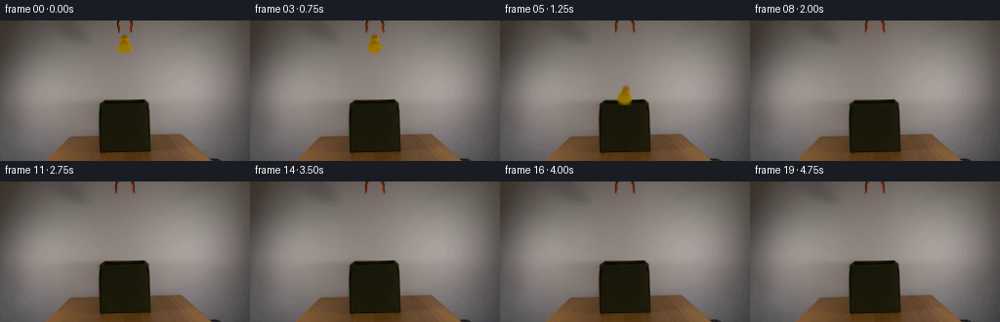
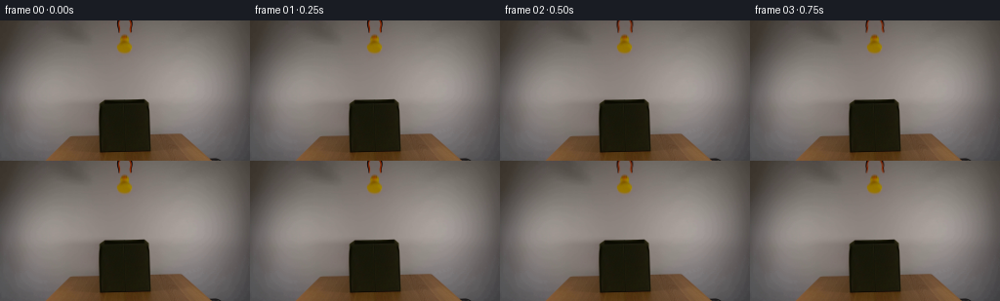

CODING AGENTS AS PIXEL WORLD MODELS
traex/GPT-6.1-Sol · 0059
点击播放 · 原生 RGB 像素
逐轮保存的候选
回放视频、检查图与代码变化。
每份候选均可单独播放。实际图片检查记录在下方工具轨迹中。
候选 01播放与检查图
点击播放 · 原生 RGB 像素


展开代码变化
--- 上一保存版本
+++ 本次保存版本
@@ -0,0 +1,117 @@
+from pathlib import Path
+import math
+import numpy as np
+from PIL import Image
+import cv2
+from scipy.ndimage import gaussian_filter
+from artifact_io import save
+
+ROOT = Path(__file__).resolve().parent
+H, W = 144, 256
+
+def smoothstep(a, b, t):
+ z = np.clip((t-a)/(b-a), 0.0, 1.0)
+ return z*z*(3.0-2.0*z)
+
+def generate():
+ first = np.array(Image.open(ROOT/'first_frame.png').convert('RGB'), dtype=np.uint8)
+ src = first.astype(np.float64)
+ yy, xx = np.mgrid[:H, :W]
+ # The unobstructed wall immediately around the apparatus is smooth, with
+ # a very small sensor-grain component. Fit it locally, never replacing
+ # any of the table, fabric, rim, or the rest of the room.
+ u = (xx-128)/25.0
+ v = (yy-20)/25.0
+ features = np.stack([np.ones_like(u), u,v,u*u,u*v,v*v,
+ u**3,u*u*v,u*v*v,v**3], axis=-1)
+ known = (xx>=105)&(xx<=151)&(yy<45)
+ known &= ~((xx>=117)&(xx<=139)&(yy<36))
+ coef = np.linalg.lstsq(features[known], src[known], rcond=None)[0]
+ wall = features @ coef
+ # Matting uses the blue deficit: the yellow rubber and orange/black
+ # fingers have nearly no blue, unlike the neutral wall. It retains all
+ # native shading and optical softness of these small objects.
+ deficit = np.maximum(0, (wall[:,:,2]-src[:,:,2]) / np.maximum(1,wall[:,:,2]))
+ duck_zone = (xx>=118)&(xx<=138)&(yy>=14)&(yy<=35)
+ tool_zone = (xx>=118)&(xx<=137)&(yy<14)
+ duck_a = np.where(duck_zone & (deficit>.025), deficit, 0.0)
+ tool_a = np.where(tool_zone & (deficit>.038), deficit, 0.0)
+ # Exclude background-colour fluctuations beyond the true contour.
+ duck_a[35] = 0
+ tool_a[13] = 0
+ occupied = (duck_a>0)|(tool_a>0)
+ clean = src.copy()
+ # Deterministic wall grain sampled from adjacent, unobstructed pixels.
+ residual = src-wall
+ grain = np.zeros_like(src)
+ for y in range(36):
+ for x in range(118,139):
+ grain[y,x] = .65*residual[y, x-22]
+ clean[occupied] = (wall+grain)[occupied]
+ # Premultiplied sprites reconstruct the original pixels when stationary,
+ # then transport their true rubber/plastic shading during the action.
+ bg = clean
+ def layer(alpha):
+ color = np.maximum(0, src - bg*(1-alpha[:,:,None]))
+ color[alpha==0] = 0
+ return np.dstack([color, alpha]).astype(np.float32)
+ duck = layer(duck_a)
+ left = layer(tool_a*(xx<128))
+ right = layer(tool_a*(xx>=128))
+
+ def warp(sprite, matrix):
+ return cv2.warpAffine(sprite, np.array(matrix,dtype=np.float32),
+ (W,H), flags=cv2.INTER_LINEAR,
+ borderMode=cv2.BORDER_CONSTANT, borderValue=0)
+ def over(out, sprite, visible=None):
+ a = np.clip(sprite[:,:,3],0,1)
+ rgb = sprite[:,:,:3]
+ if visible is not None:
+ a = a*visible
+ rgb = rgb*visible[:,:,None]
+ return out*(1-a[:,:,None])+rgb
+
+ # Foreground fabric lip. The back edge is at y=81; the front upper seam
+ # is y=87. An object dropping into the opening goes behind this seam,
+ # not down the exterior front of the box.
+ visible = np.ones((H,W),dtype=np.float32)
+ front = (xx>=101)&(xx<=153)
+ visible[front] = np.clip(87.0-yy[front],0.0,1.0)
+
+ def state(t):
+ open_amt = 3.8*smoothstep(.30,.95,t)
+ out = clean.copy()
+ # The hinge is just outside the top of the fixed frame. The jaws
+ # pivot outward a few degrees while the suspended shaft stays put.
+ for sprite,sgn,pivot in [(left,-1,121.5),(right,1,134.0)]:
+ theta = sgn*open_amt/19.0
+ c,s = math.cos(theta), math.sin(theta)
+ px,py = pivot,-6.0
+ # Positive outward displacement toward the bottom of the jaw.
+ mat = [[c,s,px-c*px-s*py],[-s,c,py+s*px-c*py]]
+ out = over(out,warp(sprite,mat))
+ tau = max(0.0,t-.80)
+ dy = .5*520.0*tau*tau
+ if dy < 90:
+ # Free fall with a tiny release-induced rotation, no artificial
+ # slow motion, pauses, or horizontal excursions.
+ angle = min(11.0,18.0*tau)
+ mat = cv2.getRotationMatrix2D((127.4,25.0),-angle,1.0)
+ mat[0,2] += .65*tau
+ mat[1,2] += dy
+ out = over(out,warp(duck,mat),visible)
+ return out
+
+ frames = [first]
+ # Short camera exposure, integrated as several analytic sub-samples,
+ # softens only the fast downward-moving rubber duck and moving fingers.
+ exposure = 1/70.0
+ for i in range(1,20):
+ t = i/4.0
+ samples = [state(t+d) for d in np.linspace(-exposure/2,exposure/2,5)]
+ frame = np.clip(np.rint(np.mean(samples,axis=0)),0,255).astype(np.uint8)
+ frames.append(frame)
+ return np.stack(frames)
+
+if __name__ == '__main__':
+ save(generate(), ROOT)
候选 02播放与检查图
点击播放 · 原生 RGB 像素
展开代码变化
--- 上一保存版本
+++ 本次保存版本
@@ -3,7 +3,6 @@
import numpy as np
from PIL import Image
import cv2
-from scipy.ndimage import gaussian_filter
from artifact_io import save
ROOT = Path(__file__).resolve().parent
@@ -48,6 +47,11 @@
for x in range(118,139):
grain[y,x] = .65*residual[y, x-22]
clean[occupied] = (wall+grain)[occupied]
+ # Ensure physically nonnegative foreground RGB in all three channels,
+ # including the black backing of the narrow plastic fingers.
+ min_alpha = np.clip(1.0-np.min(src/np.maximum(clean,1.0),axis=2),0,1)
+ duck_a = np.where(duck_a>0,np.maximum(duck_a,min_alpha),0)
+ tool_a = np.where(tool_a>0,np.maximum(tool_a,min_alpha),0)
# Premultiplied sprites reconstruct the original pixels when stationary,
# then transport their true rubber/plastic shading during the action.
bg = clean
可观测工具轨迹
实际执行的命令与返回图片。
命令 1exit 0
/bin/bash -lc 'ls -la && cat prompt.txt && cat GENERATION_RULES.md'
命令 2exit 0
/bin/bash -lc "cat artifact_io.py && python - <<'PY'
from PIL import Image
import numpy as np
im=np.array(Image.open('first_frame.png'));print('shape',im.shape)
# downsample ASCII nearest color grouping
im2=np.array(Image.fromarray(im).resize((128,72)))
for row in im2:
s=''
for r,g,b in row.astype(int):
if r>150 and g>120 and b<105: c='Y'
elif r>130 and 45<g<150 and b<90 and r>g*1.35:c='O'
elif g>r*1.12 and g>b*1.05:c='G'
elif max(r,g,b)<45:c='#'
elif max(r,g,b)<80:c='x'
elif max(r,g,b)<120:c='o'
elif max(r,g,b)<160:c=':'
elif max(r,g,b)<200:c='.'
else:c=' '
s+=c
print(s)
PY"命令 3exit 0
/bin/bash -lc "python - <<'PY'
from PIL import Image
import numpy as np,cv2
im=np.array(Image.open('first_frame.png')).astype(int)
r,g,b=im.transpose(2,0,1)
for name,mask in [('yellow',(r>130)&(g>115)&(b<110)&(r>b*1.35)),('orange',(r>110)&(r>g*1.4)&(g>40)&(b<80))]:
n, lab, st, cen=cv2.connectedComponentsWithStats(mask.astype('uint8'))
print(name,[(st[i].tolist(),cen[i].tolist()) for i in range(1,n) if st[i,4]>2])
print('crop tool and duck:')
for y in range(0,70):
s=''
for x in range(100,145):
rr,gg,bb=im[y,x]
c=' '
if rr>130 and gg>115 and bb<100:c='Y'
elif rr>110 and rr>gg*1.4 and gg>40 and bb<80:c='O'
elif max(rr,gg,bb)<35:c='#'
elif max(rr,gg,bb)<60:c='x'
elif max(rr,gg,bb)<90:c='o'
elif max(rr,gg,bb)<115:c=':'
elif max(rr,gg,bb)<150:c='.'
else:c=' '
s+=c
print(f'{y:3d} {s}')
print('box crop at single pixels')
for y in range(74,143):
s=''
for x in range(94,162):
rr,gg,bb=im[y,x]
lum=(rr+gg+bb)/3
c= 'X' if gg>rr*1.2 and gg>bb*1.08 else ' '
if lum<15:c='#'
elif lum<25:c='@'
elif lum<35:c='x'
elif lum<45:c='o'
elif lum<60:c=':'
elif lum<80:c='-'
elif lum<100:c='.'
else:c=' '
s+=c
print(f'{y:3d} {s}')
PY"命令 4exit 0
/bin/bash -lc "python - <<'PY'
from PIL import Image
import numpy as np
im=np.array(Image.open('first_frame.png'))
for y in range(13,36):
print('y=',y)
print(' '.join(f'{x}:{tuple(im[y,x])}' for x in range(118,139)))
print('background points')
for y in [0,10,15,20,30,40,60,75,80,82,85,90,95,105,120,132,136]:
print(y,[(x,tuple(im[y,x])) for x in [95,100,104,110,115,120,125,130,135,140,145,150,155,160]])
PY"命令 5exit 0
/bin/bash -lc "python - <<'PY'
from PIL import Image
import numpy as np
im=np.array(Image.open('first_frame.png')).astype(int)
for y in range(14):
print(y,' '.join(f'{x}={r},{g},{b}' for x,(r,g,b) in zip(range(117,139),im[y,117:139])))
PY"命令 6exit 0
/bin/bash -lc "cat > .tmp/analyze.py <<'PY'
import numpy as np
from PIL import Image
from scipy.ndimage import gaussian_filter
im=np.array(Image.open('first_frame.png')).astype(float)
y,x=np.mgrid[:144,:256]
u=(x-128)/25;v=(y-20)/25
features=np.stack([np.ones_like(u),u,v,u*u,u*v,v*v,u**3,u*u*v,u*v*v,v**3],-1)
mask=(x>=105)&(x<=151)&(y<45)
mask&=~((x>=117)&(x<=139)&(y<36))
coef=np.linalg.lstsq(features[mask],im[mask],rcond=None)[0]
bg=features@coef
print('background model error',np.sqrt(np.mean((bg[mask]-im[mask])**2,axis=0)))
for xx,yy in [(128,0),(128,15),(128,26),(128,35)]:print(xx,yy,bg[yy,xx])
alpha=np.clip((bg[:,:,2]-im[:,:,2]) / np.maximum(bg[:,:,2],1),0,1)
sel=(x>=118)&(x<=138)&(y>=14)&(y<=35)
alpha*=sel
alpha[alpha<.045]=0
for yy in range(14,36):
print(yy,''.join(' ' if z==0 else '.' if z<.15 else ':' if z<.4 else 'o' if z<.75 else 'X' for z in alpha[yy,117:139]))
PY
python .tmp/analyze.py"命令 7exit 0
/bin/bash -lc "cat > generate.py <<'PY'
from pathlib import Path
import math
import numpy as np
from PIL import Image
import cv2
from scipy.ndimage import gaussian_filter
from artifact_io import save
ROOT = Path(__file__).resolve().parent
H, W = 144, 256
def smoothstep(a, b, t):
z = np.clip((t-a)/(b-a), 0.0, 1.0)
return z*z*(3.0-2.0*z)
def generate():
first = np.array(Image.open(ROOT/'first_frame.png').convert('RGB'), dtype=np.uint8)
src = first.astype(np.float64)
yy, xx = np.mgrid[:H, :W]
# The unobstructed wall immediately around the apparatus is smooth, with
# a very small sensor-grain component. Fit it locally, never replacing
# any of the table, fabric, rim, or the rest of the room.
u = (xx-128)/25.0
v = (yy-20)/25.0
features = np.stack([np.ones_like(u), u,v,u*u,u*v,v*v,
u**3,u*u*v,u*v*v,v**3], axis=-1)
known = (xx>=105)&(xx<=151)&(yy<45)
known &= ~((xx>=117)&(xx<=139)&(yy<36))
coef = np.linalg.lstsq(features[known], src[known], rcond=None)[0]
wall = features @ coef
# Matting uses the blue deficit: the yellow rubber and orange/black
# fingers have nearly no blue, unlike the neutral wall. It retains all
# native shading and optical softness of these small objects.
deficit = np.maximum(0, (wall[:,:,2]-src[:,:,2]) / np.maximum(1,wall[:,:,2]))
duck_zone = (xx>=118)&(xx<=138)&(yy>=14)&(yy<=35)
tool_zone = (xx>=118)&(xx<=137)&(yy<14)
duck_a = np.where(duck_zone & (deficit>.025), deficit, 0.0)
tool_a = np.where(tool_zone & (deficit>.038), deficit, 0.0)
# Exclude background-colour fluctuations beyond the true contour.
duck_a[35] = 0
tool_a[13] = 0
occupied = (duck_a>0)|(tool_a>0)
clean = src.copy()
# Deterministic wall grain sampled from adjacent, unobstructed pixels.
residual = src-wall
grain = np.zeros_like(src)
for y in range(36):
for x in range(118,139):
grain[y,x] = .65*residual[y, x-22]
clean[occupied] = (wall+grain)[occupied]
# Premultiplied sprites reconstruct the original pixels when stationary,
# then transport their true rubber/plastic shading during the action.
bg = clean
def layer(alpha):
color = np.maximum(0, src - bg*(1-alpha[:,:,None]))
color[alpha==0] = 0
return np.dstack([color, alpha]).astype(np.float32)
duck = layer(duck_a)
left = layer(tool_a*(xx<128))
right = layer(tool_a*(xx>=128))
def warp(sprite, matrix):
return cv2.warpAffine(sprite, np.array(matrix,dtype=np.float32),
(W,H), flags=cv2.INTER_LINEAR,
borderMode=cv2.BORDER_CONSTANT, borderValue=0)
def over(out, sprite, visible=None):
a = np.clip(sprite[:,:,3],0,1)
rgb = sprite[:,:,:3]
if visible is not None:
a = a*visible
rgb = rgb*visible[:,:,None]
return out*(1-a[:,:,None])+rgb
# Foreground fabric lip. The back edge is at y=81; the front upper seam
# is y=87. An object dropping into the opening goes behind this seam,
# not down the exterior front of the box.
visible = np.ones((H,W),dtype=np.float32)
front = (xx>=101)&(xx<=153)
visible[front] = np.clip(87.0-yy[front],0.0,1.0)
def state(t):
open_amt = 3.8*smoothstep(.30,.95,t)
out = clean.copy()
# The hinge is just outside the top of the fixed frame. The jaws
# pivot outward a few degrees while the suspended shaft stays put.
for sprite,sgn,pivot in [(left,-1,121.5),(right,1,134.0)]:
theta = sgn*open_amt/19.0
c,s = math.cos(theta), math.sin(theta)
px,py = pivot,-6.0
# Positive outward displacement toward the bottom of the jaw.
mat = [[c,s,px-c*px-s*py],[-s,c,py+s*px-c*py]]
out = over(out,warp(sprite,mat))
tau = max(0.0,t-.80)
dy = .5*520.0*tau*tau
if dy < 90:
# Free fall with a tiny release-induced rotation, no artificial
# slow motion, pauses, or horizontal excursions.
angle = min(11.0,18.0*tau)
mat = cv2.getRotationMatrix2D((127.4,25.0),-angle,1.0)
mat[0,2] += .65*tau
mat[1,2] += dy
out = over(out,warp(duck,mat),visible)
return out
frames = [first]
# Short camera exposure, integrated as several analytic sub-samples,
# softens only the fast downward-moving rubber duck and moving fingers.
exposure = 1/70.0
for i in range(1,20):
t = i/4.0
samples = [state(t+d) for d in np.linspace(-exposure/2,exposure/2,5)]
frame = np.clip(np.rint(np.mean(samples,axis=0)),0,255).astype(np.uint8)
frames.append(frame)
return np.stack(frames)
if __name__ == '__main__':
save(generate(), ROOT)
PY
python generate.py
python - <<'PY'
import numpy as np
from PIL import Image
orig=np.array(Image.open('first_frame.png'))
print('frame00 exact:',np.array_equal(orig,np.array(Image.open('frames/00.png'))))
for i in range(8):
im=np.array(Image.open(f'frames/{i:02d}.png')).astype(int)
print('FRAME',i)
for y in range(0,92,2):
s=''
for x in range(114,143):
r,g,b=im[y,x]
if r>125 and g>110 and b<95: c='Y'
elif r>110 and r>g*1.4 and g>40 and b<80:c='O'
elif max(r,g,b)<40:c='#'
elif max(r,g,b)<70:c='x'
elif max(r,g,b)<105:c='.'
else:c=' '
s+=c
if s.strip():print(y,s)
PY"命令 8exit 0
/bin/bash -lc "python - <<'PY'
from PIL import Image
import numpy as np
f=np.array(Image.open('frames/00.png')).astype(int)
for i in [1,2,3,4,5,6,19]:
a=np.array(Image.open(f'frames/{i:02d}.png')).astype(int)
delta=np.abs(a-f)
ys,xs=np.where(delta.max(2)>0)
print(i,'changed=',len(xs),'bbox=',(xs.min(),ys.min(),xs.max(),ys.max()),'max=',delta.max(),'mean=',delta.mean())
PY
ls -lh pixels.npz index.html"命令 9exit 0
/bin/bash -lc "python generate.py && python - <<'PY'
from PIL import Image
import numpy as np
f=np.array(Image.open('first_frame.png'))
a=np.array(Image.open('frames/01.png'))
print('static first interval maximum error:',np.abs(f.astype(int)-a.astype(int)).max())
p=np.load('pixels.npz')['pixels'];print('packed RGB:',p.shape,p.dtype)
assert np.array_equal(f,np.array(Image.open('frames/00.png')))
assert len(list(__import__('pathlib').Path('frames').glob('*.png')))==20
PY"保存候选 2 份；完成命令 9 次；可验证图片返回 0 张。原始 API 响应与完整日志保留在本地。